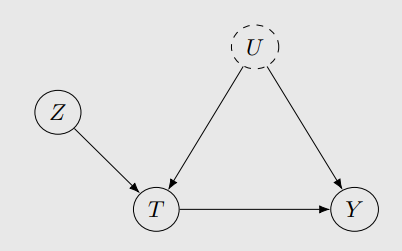
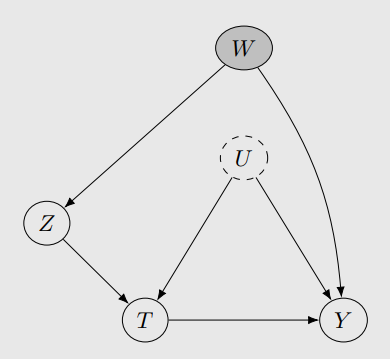
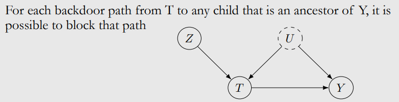
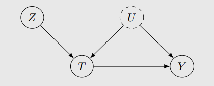

안녕하세요, 가짜연구소 Causal Inference 팀의 남궁민상, 정호재입니다.
Introduction to Causal Inference 강의의 아홉번째 챕터이며, 해당 챕터에서 다루는 내용은 아래와 같습니다.
강의 영상 링크 : https://youtu.be/B0SRWteGoOw
작성된 내용 중 개선점이나 잘못된 부분이 있다면 댓글로 알려주세요!
Contents
- Intro
- What is an Instrument?
- No Nonparametric Identification of the ATE
- Warm-Up: Binary Linear Setting
- Continuous Linear Setting
- Nonparametric Identification of the LATE
- IV in More General Settings
1. Intro
Q : 관찰되지 않은 교란 요인이 있을 때 어떻게 인과관계를 확인할 수 있나요?
A : Frontdoor adjustment - Chap.5
- 중간 매개변수를 사용하여 인과효과를 계산하는 방법
A : Unconfounded children criterion - Chap.5
- 하나의 conditioning set으로 처치변수 T의 자손 중에 결과변수 Y의 조상인 것들로 통하는 backdoor path를 모두 막는 방법
A : Some other fancy application of do-calculus - Chap.5
- 그래프가 아닌 statistical quantity를 이용한 일반적인 방법
A : Set identification (bounds) - Chap.7
- 관찰되지 않은 교란 요인의 interval을 좁혀보는 방법
A : Sensitivity analysis - Chap.7
- 관찰되지 않은 교란요인이 존재할때 정량적으로 영향력을 판단하는 방법
A : Instrumental Variables(☆)
- 다른 변수로 관찰되지 않은 교란요인의 영향을 없애는 방법
2. What is an Instrument?
도구 변수란, 처치변수 T와에는 영향을 주면서 그 이외의 변수에는 영향을 주거나 받지 않는 변수를 의미합니다.
2.1 Assumption
1. Relevance
- 도구변수 Z는 처치변수 T에 인과적 영향(상관성 존재)을 끼칩니다.

2. Exclusion Restriction


- 결과변수 Y에 대한 도구변수 Z 인과적 영향은 처치변수 T에 의해 완전히 중재됩니다.
- 도구 변수 Z가 결과변수 Y에 영향을 미치기 위해선 반드시 처치변수 T를 통해야 합니다.
3. Instrumental Unconfoundedness
- 도구변수 Z에서 결과변수 Y간의 backdoor paths는 없습니다.
- 도구변수 Z와 관찰되지 않은 교란 요인 U의 관계는 없습니다.



- 도구변수 Z와 관찰되지 않은 교란 요인 U의 관계가 없으므로 관찰된 교란 변수(W)를 차단하여 Instrumental variables를 사용할 수 있습니다.
3. No Nonparametric Identification of the ATE
Q : 도구 변수가 인과관계를 식별할 수 있다면, 왜 Chapter 6. Non-parametiric Identification에서 보지 않았을까요?
A : 도구변수는 Non-parametiric Identification 방법이 아니기 때문입니다.
- 가정이 필요 없을때 Non-parametiric Identification을 가질 수 있는 데 도구변수에는 3가정이 존재합니다.
> (FYI) Nonparametric Identification을 만족하는 조건

- [처치변수 T]와 [결과변수 Y의 ancestor이면서 처치변수 T의 자식노드인 어느 노드]와의 path는 차단할 수 있습니다.
4. Warm-Up: Binary Linear Setting
- Assumption
- \(Y:= \delta T + \alpha_u U\)
- Setting
- 처치변수 T와 도구변수 Z는 binary
- Associational difference for the Z-Y relationship :
\(E[Y | Z = 1] - E[Y | Z = 0]\)
\(= E[\delta T + \alpha_u U | Z = 1] -E[\delta T + \alpha_u U| Z = 0]\) ← exclusion restriction(2번째가정) and linear outcome assumptions
\(= \delta(E[T | Z = 1] - E[T | Z = 0]) + \alpha_u (E[U|Z=1] - E[U|Z=0])\)
\(= \delta(E[T | Z = 1] - E[T | Z = 0]) + \alpha_u (E[U] - E[U])\) ← instrumental unconfoundedness assumption(3번째가정)
\(= \delta(E[T | Z = 1] - E[T | Z = 0])\)
- Wald estimand :
\(\delta=\frac{Cov(Y,Z) }{Cov(T,Z) }\)
Relevance Assumption으로 \(E[T | Z = 1] \not= E[T | Z = 0]\) 을 만족합니다.

도구변수 Z에서 결과변수 Y로 가는 backdoor path는 존재하지 않으므로 각 path의 영향을 살펴봅니다.
또한 Causal effect가 있는 directed path를 계수들의 곱으로 표현할 수 있습니다.
이를 대입하면 \(\delta = \frac{\alpha_z \delta}{\alpha_z}\) 으로 변경할 수 있습니다.
- Wald estimator :
\(\hat\delta=\frac{\frac{1}{n_1}\sum_{i:z_i=1}Y_i -\frac{1}{n_0}\sum_{i:z_i=0}Y_i }{\frac{1}{n_1}\sum_{i:z_i=1}T_i -\frac{1}{n_0}\sum_{i:z_i=0}T_i }\)
Z→Y의 영향을 구한 후 Z→T의 영향을 나누어서 계산합니다.
5. Continuous Linear Setting
- Assumption
- \(Y:= \delta T + \alpha_u U\)
- Setting
- 처치변수 T와 도구변수 Z는 continuous
- Associational difference for the Z-Y relationship :
\(Cov(Y,Z) = E[YZ]E[Y]E[Z]\)
\(= E[(\delta T + \alpha_u U )Z] -E[\delta T + \alpha_u U]E[ Z]\) ← exclusion restriction(2번째가정) and linear outcome assumptions
\(= \delta E[TZ] + \alpha_u E[UZ] - \delta E[T]E[Z] - \alpha_u E[U]E[Z]\)
\(= \delta (E[TZ] - E[T]E[Z]) + \alpha_u (E[UZ] - E[U]E[Z])\)
\(= \delta Cov(T,Z) + \alpha_u Cov(U,Z)\)
\(= \delta Cov(T,Z)\) ← instrumental unconfoundedness assumption(3번째가정)
- Wald estimand :
\(\delta=\frac{Cov(Y,Z) }{Cov(T,Z) }\)
Relevance Assumption으로 \(Cov(T,Z) \not=0\) 을 만족합니다.
- Wald estimator :
\(\hat\delta=\frac{\hat{Cov}(Y,Z) }{\hat{Cov}(T,Z) }\)
Two-stage least squares estimator
- Linearly regress \(T\) on \(Z\) to estimate \(E[T | Z ]\) . This gives us the projection of \(T\) onto \(Z\): \(\hat T\).
- Linearly regress \(Y\) on \(\hat T\) to estimate \(E[\hat T | Z ]\) . Obtain our estimate \(\hat \delta\) as the fitted coefficient in front of \(\hat T\).


\(\hat T\)는 \(U\)에 대한 함수가 아니므로 \(U\)에서 \(T\)로가는 path가 사라져서 backdoor path가 제거됩니다.
※ 예시
import numpy as np
import pandas as pd
import statsmodels.formula.api as sm
np.random.seed(12345) # 동일한 결과를 위해 시드 설정
num = 10000 # 데이터 수
U = np.random.normal(size = num) # Unobserved Factors
Z = np.random.normal(size = num) # Instrumental Variable
# T는 U와 Z의 자식노드
T = 3.0*U + 6.0*Z + np.random.normal(size = num) # Treatment
# Y는 T와 U의 지식노드
Y = 15.0*U + 9.0*T + np.random.normal(size = num) # Outcome
data = pd.DataFrame({'T' : T, 'U' : U, 'Y' : Y})- 단순비교
# 단순 비교
sod_model = sm.ols('Y ~ T', data).fit()
# 교란 변수를 누락하였기에 인과 효과가 잘못 추정됨
sod_model.summary().tables[1]| coef | std err | t | P>|t| | [0.025 | 0.975] | |
|---|---|---|---|---|---|---|
| Intercept | -0.1277 | 0.134 | -0.953 | 0.341 | -0.390 | 0.135 |
| T | 9.9905 | 0.020 | 505.906 | 0.000 | 9.952 | 10.029 |
교란변수를 통제하지 않았을 때 인과효과는 9.9905로 나옴 0.9905만큼의 error가 발생합니다.
\(Y = Intercept + T + e\)
- 도구변수 활용
\[ (T → Y)의 인과효과 = \frac {(Z → Y) path의 영향} {(Z → T) path의 영향} \]
# first stage model(Z -> T)
Z_to_T = sm.ols('T ~ Z', data).fit()
# reduced model(Z -> Y)
Z_to_Y = sm.ols('Y ~ Z', data).fit()# first stage model
Z_to_T.summary().tables[1]| coef | std err | t | P>|t| | [0.025 | 0.975] | |
|---|---|---|---|---|---|---|
| Intercept | -0.0349 | 0.032 | -1.103 | 0.270 | -0.097 | 0.027 |
| T | 6.0207 | 0.032 | 189.711 | 0.000 | 5.958 | 6.083 |
# reduced model
Z_to_Y.summary().tables[1]| coef | std err | t | P>|t| | [0.025 | 0.975] | |
|---|---|---|---|---|---|---|
| Intercept | -0.4725 | 0.429 | -1.100 | 0.271 | -1.314 | 0.369 |
| T | 54.3108 | 0.431 | 126.122 | 0.000 | 53.467 | 55.155 |
Z_to_Y.params.Z/Z_to_T.params.Z계산결과 9.020754651013464로 실제 인과효과인 9에 근사합니다.
- 2SLS
인과 효과의 유의성, 신뢰구간을 확인하기 위해 2SLS를 사용합니다.
# first stage
t_hat = Z_to_T.predict()
data['T_hat'] = t_hat
# second stage
That_to_Y = sm.ols('Y ~ T_hat', data).fit()
# second stage model
That_to_Y.summary().tables[1]| coef | std err | t | P>|t| | [0.025 | 0.975] | |
|---|---|---|---|---|---|---|
| Intercept | -0.1575 | 0.429 | -0.367 | 0.714 | -0.999 | 0.684 |
| T | 9.0208 | 0.072 | 126.122 | 0.000 | 8.881 | 9.161 |
That_to_Y.params.T_hat추정 인과효과는 9.020754651013458이며, p-value가 매우 작아 인과효과가 유의하다고 판단할 수 있습니다.
6. Nonparametric Identification of the LATE
앞에서 Linear setting에서 ATE를 계산하는 법을 봤습니다. 그런데 이건 너무 강력한 가정입니다.
nonparametric한 상황(분포에 대한 가정이 없는 상황)에서 ATE를 구할 수는 없을까요? 완전한 ATE는 아니지만 구할 수 있습니다!
IV 관련 Notation
본격적으로 들어가기 앞서 몇 가지 표기법을 정리합시다
- \(Z\): 도구변수 (instrumental variable)
- \(T\): 처치변수 (treatment variable)
- \(Y\): 결과, 종속변수 (dependent variable)
\(Z \rightarrow T \rightarrow Y\)로 가는 인과가 있다고 할 때,
- \(Y(1) \triangleq Y(T=1)\)
- \(T(1) \triangleq T(Z=1)\)
- \(Y(Z=1)\)처럼 \(Z\)에 intervene했을 때의 potential outcome \(Y\)의 값은 별다른 축약형을 가지지 않습니다.
Principal Strata
\(Z\)가 \(T\)에 어떻게 영향을 주느냐에 따라 데이터를 4가지 그룹으로 나눌 수 있습니다.
- Complier: \(Z\)가 시키는대로 하는 사람들.
\[ T(1)=T(Z=1)=1 \qquad T(0)=T(Z=0)=0 \]
- Defier: \(Z\)가 시키는 거 반대로만 하는 청개구리들.
- \[ T(1)=T(Z=1)=0 \qquad T(0)=T(Z=0)=1 \]
- Always-taker: \(Z\)에 상관 없이 treatment를 받는 사람들.
- \[ T(1)=T(Z=1)=1 \qquad T(0)=T(Z=0)=1 \]
- Never-taker: \(Z\)에 상관 없이 treatment를 안 받는 사람들.
- \[ T(1)=T(Z=1)=0 \qquad T(0)=T(Z=0)=0 \]
💡 이 때, 위에 2개 그룹과 아래 2개 그룹은 다른 causal graph를 가집니다.

LATE 구하기
IV를 써도, unobserved confounding이 있다면 nonparametric한 상황에서의 ATE를 구할 수는 없습니다.
하지만 약간의 가정을 추가해서 LATE (Local Average Treatment Effect) 또는 CACE (Complier Average Causal Effect)라고 불리는 걸 구할 수는 있습니다.
💡 LATE (또는 CACE)는 아래와 같이 정의됩니다.
\(\mathbb{E}[Y(T=1)-Y(T=0)\:|\:T(Z=1)=1,\:T(Z=0)=0]\)
LATE를 구하기 위해서는 monotonicity(단조성)이라는 가정을 덧붙여야 합니다.
\(\forall i, \space T_i(Z=1) \geq T_i(Z=0)\)
다르게 말하자면, 우리 데이터에 defier가 없다는 가정입니다.
Relevance, exclusion restriction, instrumental unconfoundedness + monotonicity 가정이 만족될 때, LATE는 Wald estimand와 같습니다.
\(\mathbb{E}[Y(1)-Y(0)\:|\:T(1)=1,\:T(0)=0]= \frac{\mathbb{E}[Y|Z=1]-\mathbb{E}[Y|Z=0]}{\mathbb{E}[T|Z=1]-\mathbb{E}[T|Z=0]}\)
- 혹시 유도 과정이 알고 싶나요?
\(Z\)가 \(Y\)에 끼치는 causal effect는 아래와 같습니다.
\(E[Y(Z=1)-Y(Z=0)]\)
우리가 앞서 배웠던 4가지 그룹을 생각해볼까요? \(Z\)와 \(T\)의 값에 따라 아래와 같이 풀어 쓸 수 있습니다.
\(\begin{aligned} \mathbb{E}[…] &= \mathbb{E}[…|T(1)=1,T(0)=0]\:P(T(1)=1,T(0)=0) \quad (complier) \\ &+ \mathbb{E}[…|T(1)=0,T(0)=1]\:P(T(1)=0,T(0)=1) \quad (defier) \\ &+ \mathbb{E}[…|T(1)=1,T(0)=1]\:P(T(1)=1,T(0)=1) \quad (always-taker) \\ &+ \mathbb{E}[…|T(1)=0,T(0)=0]\:P(T(1)=0,T(0)=0) \quad (never-taker) \end{aligned}\)
여기서 몇 가지 항은 자동으로 소거됩니다.
\(\begin{aligned} \mathbb{E}[…] &= \mathbb{E}[…|T(1)=1,T(0)=0]\:P(T(1)=1,T(0)=0) \quad (complier) \\ &+ \mathbb{E}[…|T(1)=0,T(0)=1]\:P(T(1)=0,T(0)=1) \quad (*defier) \\ &+ \mathbb{E}[…|T(1)=1,T(0)=1]\:P(T(1)=1,T(0)=1) \quad (**always-taker) \\ &+ \mathbb{E}[…|T(1)=0,T(0)=0]\:P(T(1)=0,T(0)=0) \quad (**never-taker) \end{aligned}\)
*Defier의 경우, monotonicity 가정에 의해 존재하지 않습니다. 따라서 깔끔하게 무시 가능합니다.
**Always-taker와 **Never-taker의 경우, \(Z\)와 \(T\) 사이에 (나아가 \(Z\)와 \(Y\) 사이에) causal effect가 존재하지 않습니다. 따라서 이 항들도 깔끔하게 무시합시다.
이를 정리하면 다음과 같습니다.
\(\mathbb{E}[Y(Z=1)-Y(Z=0)|T(1)=1,T(0)=0]=\frac{\mathbb{E}[Y(Z=1)-Y(Z=0)]}{P(T(1)=1,T(0)=0)}\)
이 때, complier는 \(Z\)의 값과 \(T\)의 값이 같으므로, 좌항의 \(Y(Z=0)\)과 \(Y(Z=1)\)를 \(Y(T=0)\)와 \(Y(T=1)\)로 대체할 수 있습니다. 그리고 instrumental unconfoundedness에 의해 우항도 다시 쓸 수 있습니다.
\(\mathbb{E}[Y(T=1)-Y(T=0)|T(1)=1,T(0)=0] =\frac{\mathbb{E}[Y|Z=1]-\mathbb{E}[Y|Z=0]}{P(T(1)=1,T(0)=0)}\)
여기에서 \(P(T(1)=1,T(0)=0)\)를 자세히 살펴봅시다. 전체 집단에서 \((T=1|Z=0)\)인 집단과 \((T=0|Z=1)\)인 집단을 제외한 게 \((T(1)=1, T(0)=0)\)인 집단이겠죠? 따라서 우항은 아래와 같이 다시 쓸 수 있습니다.
\(\begin{aligned} &=\frac{\mathbb{E}[Y|Z=1]-\mathbb{E}[Y|Z=0]}{1-P(T=1|Z=0)-P(T=0|Z=1)} \\ &=\frac{\mathbb{E}[Y|Z=1]-\mathbb{E}[Y|Z=0]}{1-P(T=1|Z=0)-(1-P(T=1|Z=1))} \\ &=\frac{\mathbb{E}[Y|Z=1]-\mathbb{E}[Y|Z=0]}{P(T=1|Z=1)-P(T=1|Z=0)} \end{aligned}\)
그리고 마지막으로, \(T\)가 binary이므로 \(T=1\)에 대한 확률은 기대값으로 바꿀 수 있습니다.
\(\begin{aligned} &=\frac{\mathbb{E}[Y|Z=1]-\mathbb{E}[Y|Z=0]}{P(T=1|Z=1)-P(T=1|Z=0)} \\ &= \frac{\mathbb{E}[Y|Z=1]-\mathbb{E}[Y|Z=0]}{\mathbb{E}[T|Z=1]-\mathbb{E}[T|Z=0]} \quad (Wald\;estimand) \end{aligned}\)
💡 관점을 약간 바꿔 볼 수도 있습니다.
Q. Wald estimand (\(Z\rightarrow Y\) 인과 / \(Z\rightarrow T\) 인과) 는 무엇을 나타내는 지표일까요?
→ \(Z\)가 \(T\)에 어떤 식으로 영향을 주느냐에 따라, 집단을 4개 sub-population으로 나눌 수 있습니다. Wald estimand는 이 중 complier 집단의 ATE.
→ 좀 더 강한 가정 (\(T\)와 \(Y\)가 linearity한 관계) 이 만족할 때는, 전체 집단의 ATE로 생각할 수도 있습니다.
LATE에도 다음과 같은 한계가 있습니다
- monotonicity가 항상 충족되는 건 아닙니다.
- 상황에 따라, 전체 집단의 ATE가 필요하지 Local ATE가 궁금하지 않은 경우도 많습니다.
7. IV in More General Settings
앞서서 \(Y\)가 \(T\)에 대한 linear equation으로 주어지는 경우를 다뤘었습니다. 이를 좀 더 확장해서 \(Y\)가 \(T\)에 대해 좀 더 복잡한 함수로 표현되는 경우도 생각해 볼 수 있습니다.
\[ Y:=f(T,W)+U \]
위와 같이 나타내며, 딥러닝 등을 이용해 \(f\)를 모델링할 수 있습니다.
Citation
@online{namgoon & hojae2023,
author = {Namgoon \& Hojae, Minsang},
title = {10\textbackslash. {Instrumental} {Variables}},
date = {2023-11-07},
langid = {en}
}